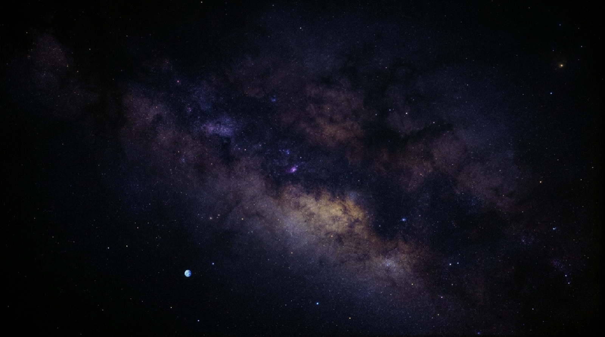
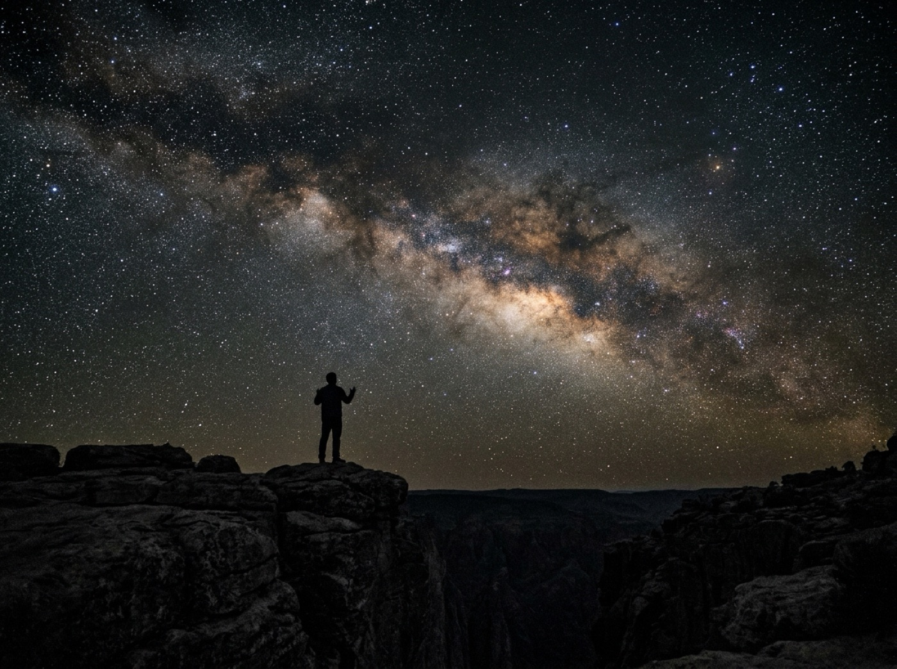
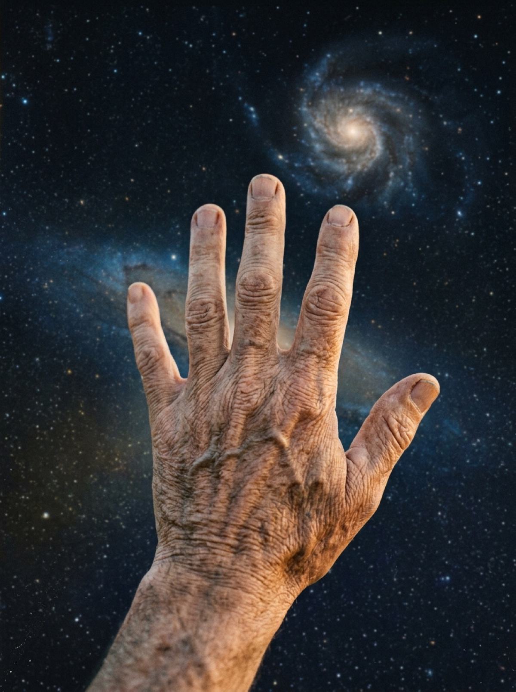
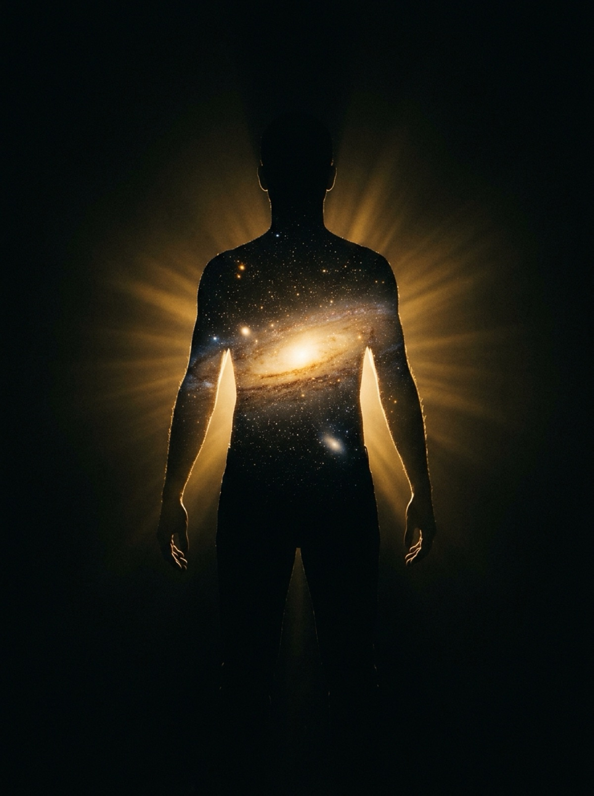

هل في عقل الإنسان
سرّ خلافته في الأرض؟

يقف الإنسان ليلاً، فيرفع بصره إلى السماء الممتدة، فيسقط في صمتٍ مباغت.
لا يعادل حجم كوكب الأرض نفسه ذرةَ سكر إذا ما قورن بحجم هذا الكون المهول.
وإذا كان كوكبنا، بكل ما فيه من جبال ومحيطات وتاريخ وحضارات، بهذا الصغر المتناهي في زاويةٍ منسية، فكيف بحجم الإنسان؟ جسدٌ هش لا يكاد يُرى إذا ابتعدت عنه خطوة فلكية واحدة.

ومع ذلك… هنا ينقلب الميزان كله.
هذا الكون العظيم، باتساع مجراته وتلاطم سدمه، جمادٌ أصم لا يعي ذاته؛ لا يدري أنه يدور، ولا يحسب سرعة اندفاعه في الفراغ.
فإن هذا الكائن المتناهي في الصغر استطاع بعقله أن يدرك شيئاً من اتساع هذا الكون العظيم، وأن يسبر أغواره ويكتشف قوانينه، وأن ينظر إلى أجرام تبعد عنه مليارات السنين الضوئية فيقرأ تاريخ ولادتها وموتها.

وهذا يعيدنا إلى القول المنسوب إلى الإمام علي بن أبي طالب حين أسقط وهم المقاييس المادية:
«وَتَحْسَبُ أَنَّكَ جِرْمٌ صَغِيرٌ
وَفِيكَ انطَوَى العَالَمُ الأَكْبَرُ»
الحجم مقياس المادة وحدها، والوعي مقياس الحقيقة.
فعلاً، كيف استطاع هذا الكائن الضئيل، دون سائر الكائنات التي نعرفها، أن يحيط بعقله بشيء مما هو متاح لنا من أسرار هذا الكون؟
ليس السر في بسطة الجسد بل في هذا النور الذي يحمله. عقلٌ يستوعب الفضاء الشاسع ولا يستوعبه الفضاء، وفيه يكمن سر الخلافة والأمانة.